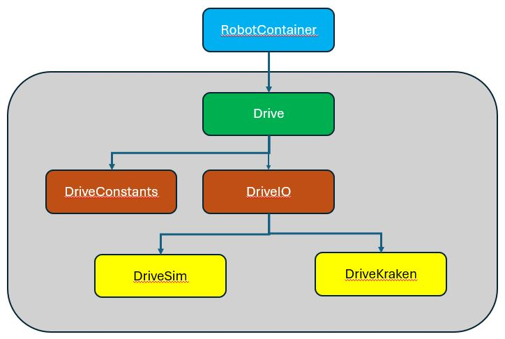
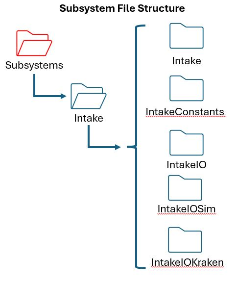

Subsystems
Subsystems are the basic units of functionally for our robot, such as drive trains and mechanical arms. They encapsulate low-level hardware objects (motor controllers, sensors, etc) and provide methods that can be used by Commands. We represent subsystems in code by using Objects. Objects are composed of Data Structures and Procedures, as explained in Programming Basics . You should learn those concepts before we look at the subsystems that are on the Robot.
For this module the majority of the code implementation can be found in the Subsystems section of the FRC Documentation.

Subsystem Structure
In general, each subsystem should be placed in it’s own folder. This keeps things clean and avoids conflict with other developers.
There should be a single subsystem that controls all the functional logic. When you write subsystem you will not always have the motors available to run your code on. (For example if you are at home writing code.) So we need you to seperate all the motor specific logic and put that in a seperate class. In this case it is called DriveKraken. This class is specifically setup to handle Kraken motors. If we had a drive train that had Falcons installed we would put all of that logic in a DriveFalcon class.
You should also develop a simulator class that tests all your motor functions without a motor. In this case it is called DriveSim. The actual First Competition is a very fast paced event, so we don’t want a lot of code saying ‘am I doing a simulator?’ or ‘is this a real motor?’. That’s a lot of instuctions that would slow down our robot. So we create an Interface class. In this case it is called DriveIO. Let’s look at an example for the Intake subsystem to see how this would work:

The interface class has empty funtions for both the Kraken and Sim classes. So when the Drive class says resetPidgeon. It makes a function call to the DriveIO module and that code sends it to the Sim or Kraken class depending on what we are executing. So let’s take a look at an interface class:
public interface DriveIO {
default DriveIOdata update() {
return null;
}
default void setSwerveRequest(SwerveRequest requestToApply) {}
default void setTeamRotation(DriverStation.Alliance alliance) {}
default void resetPidgeon() {}
default void seedFieldRelative(Pose2d seedling) {}
default void updateVision(Pose2d calculatedPose, double timestamp, Matrix<N3, N1> stDevs) {}
default void setOperatorPerspective(Rotation2d, rotation2d) {}
default void setNeutralMode(NeutralModeValue neutralModeValue) {}
}
Think of the interface class as a traffic controller. It sends the request to Sim or Kraken. It contains empty prototype functions that do not contain any code. Again we don’t want a lot of code each time saying which way do I go? So we solve that by passing which module we want in the RobotContainer class. For example, remember this code from the basic structure page:
if(!Utils.isSimulation()){
drivetrain = new Drive(new DriveKraken());
} else {
drivetrain = new Drive(new DriveSim());
}
We are passing in the correct module when the RobotContainer object container is created, so we only test if we are simulating once. We will dive more into depth later in the training, but for now keep in mind the structure of writing a subsystem.
Drive Subsystem
The primary job of the Drive subsystem is to send speed commands to its motors. This is done in the teleopDrive() method where we pass in the required speed in the X direction, the Y direction and the rotational rate in the theta direction. The setSwerveRequest object will take care of controlling the speed to the drive motors and the azimuth motors based on the kinematics of the drivetrain.
Note
Theta is the angle of the chassis.
public void teleopDrive(double driveX, double driveY, double driveTheta) {
driveIO.setSwerveRequest(FIELD_CENTRIC
.withVelocityX((driveX <= 0 ? -(driveX * driveX) : (driveX * driveX)) * DriveConfig.MAX_VELOCITY())
.withVelocityY((driveY <= 0 ? -(driveY * driveY) : (driveY * driveY)) * DriveConfig.MAX_VELOCITY())
.withRotationalRate((driveTheta <= 0 ? -(driveTheta * driveTheta) : (driveTheta * driveTheta)) * DriveConfig.MAX_ANGULAR_VELOCITY())
);
Other procedures in the Drive class will take care of resetting and reading the wheel encoders. It’ll also translate the wheel encoder values into distances, as explained in the Pose Estimation module.
Lab - Subsystems
This lab builds on the lab that you did in the Basic Robot Structure section of the training guide. You’ll learn about the following Java programming concepts:
Java Objects are programming constructs used to represent physical objects and ideas in the real world.
Java Constructors special methods that are used to initialize objects.
Java Methods, are declared within a class, and are used to perform certain actions.
Abstract Classes that show only essential things to the user and hides the internal details. Abstraction lets you focus on what the object does instead of how it does it.
Interfaces, which are used to group together related methods that specify the behavior of a class.
There are two updates for this lab:
Create a method to get the current heading of the robot.
Add comments to divide the Drivetrain class into subsections.
Create Heading Method
In later programs we’re going to need to get the current heading of our robot. The heading is obtained from the RomiGyro class. The RomiGyro is defined as a subsystem of the Drivetrain class.
Update the Drivetrain class with a new method called getHeading() that will be used to get the current heading of the robot. You can place this method at around line 132 of the Drivetrain class just after the getGyroAngleZ() method. The method will return a Rotation2d() value and be defined as public. When you’re done it should look like this:
public Rotation2d getHeading() {
return new Rotation2d(getGyroAngleZ() * (Math.PI/180));
}
We’re now done creating our new heading method!
Use the this. Syntax for Member Variables
In most of the code examples used by WPILib the member variables are denoted by using the m_ syntax. Our team uses the this. convention so we’ll change our code accordingly. This will give you a chance to learn the Replace function in the VSCode editor.
Open the Drivetrain class and select one of the occurences of m_ with the mouse. Make sure that you only select those two characters. Then right mouse click and select Change All Occurences. Type this. to replace all occurences of m_. You’ll see a whole bunch of errors. This is because the this. keyword cannot be used when you first define the member variable. To fix this, remove the this. from all the lines 20 through 36.
Repeat this process for all of the other files.
Add Comments
As you add functionality to your code some of the files may get quite long, so it’s a good idea to divide them into sections by using comment separators. In the Drivetrain class we’ll add the following comment separators to group together methods that are logically related. This will make them easier to find. The comment sections will be:
Initialization - Includes everything required to construct and initialize the Drivetrain object.
Control Output - Any method that causes the robot, or subsystem, to react in some way.
Sensor Input - Methods that give information on the current state of the Drivetrain.
Process Logic - Mostly logic that occurs during the periodic() loop, or processes/interprets incoming data before performing some kind of Control Output to the robot. Incoming data will normally be provided by methods found in the System State subsection.
The comments will span most of the line width to form a separator and will look like this:
// -----------------------------------------------------------
// System State
// -----------------------------------------------------------
Think about where these file separators will go and what code will go in each section. Here are a couple tips:
If a method is returning a value, such as double, then it’s most likely describing the Sensor Input.
If a method return type is declared as void then it’s probably some kind of Control Output.
That’s all for this update!
References
FRC Documentation - Subsystems
FRC Documentation - Differential Drive Robots
FRC Documentation - Using the WPILib Classes to Drive your Robot
Java Tutorial on W3Schools
QUT Robot Academy Measuring Motion